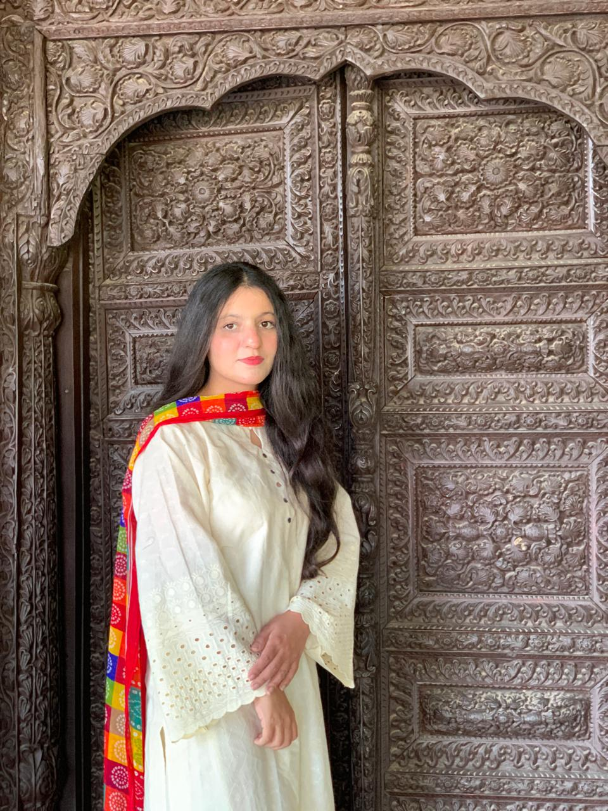
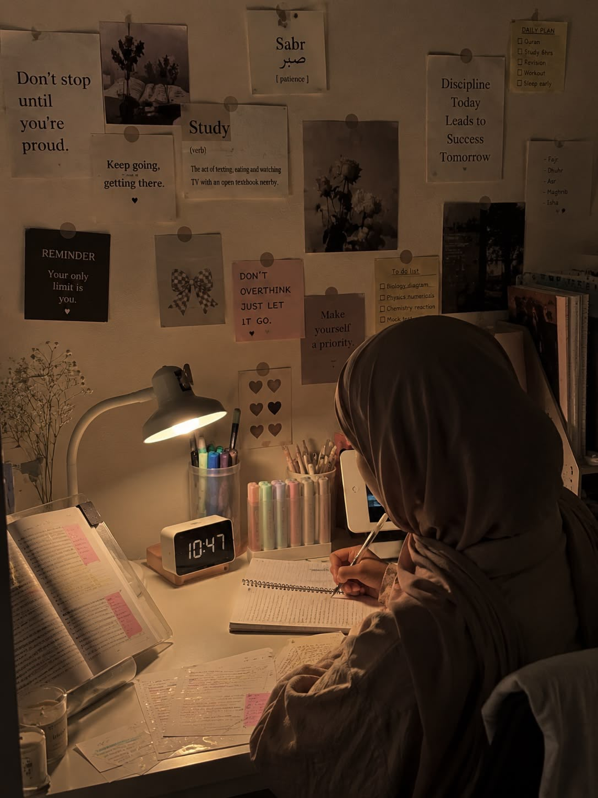

Hello, I'm
BS Chemistry Graduate
Detail-oriented chemistry graduate with hands-on lab and clinical pathology experience, strong client-communication skills, and a focus on research. Currently seeking fully funded international Master's and PhD programs.


Dedicated and detail-oriented BS Chemistry graduate with a strong academic foundation (CGPA 3.48/4.00) from the Women University of Azad Jammu and Kashmir, complemented by hands-on laboratory experience gained through a structured clinical internship in the Pathology Department at DHQ Hospital, Bagh. Specialized exposure spans clinical pathology, chemical pathology, haematology, blood banking, serology, and PCR-based molecular diagnostic techniques. Since graduation, has also built professional experience in accounts receivable and lead generation, developing strong analytical, documentation, and client-communication skills that complement a scientific background. Currently seeking fully-funded international scholarships to pursue Master's or doctoral (Ph.D.) studies in Chemistry or a related discipline, with the aim of developing advanced research methodologies and practical laboratory skills within a rigorous academic environment abroad.
Women University of Azad Jammu and Kashmir, Bagh, Pakistan
2019 – 2023
CGPA: 3.48 / 4.00
Read Foundation School & College, Rera Bagh, AJK
2019
Read Foundation School, Rehra, District Bagh, AJK
2017
Medical Billing Services, RPBI
January 2024 – Present
RPBI
2023 – 2024
District Headquarters (DHQ) Hospital, Bagh, Azad Jammu & Kashmir
11 June 2023 – 11 July 2023
Women University of Azad Jammu and Kashmir, 2019–2023
Recognized for dedication, punctuality, and active learning during a one-month pathology internship at DHQ Hospital, Bagh (2023)
Read Foundation School, Rehra, District Bagh, 2017
Read Foundation School & College, Rera Bagh, 2019
Instrument calibration and quantitative and qualitative chemical determination.
Biochemical diagnostic markers and laboratory fluid analysis.
Chemical synthesis, therapeutic compounds, and target discovery.
Applying chemical principles to advance medical diagnostic technologies and improve healthcare outcomes.
Location: Rawalpindi, Pakistan